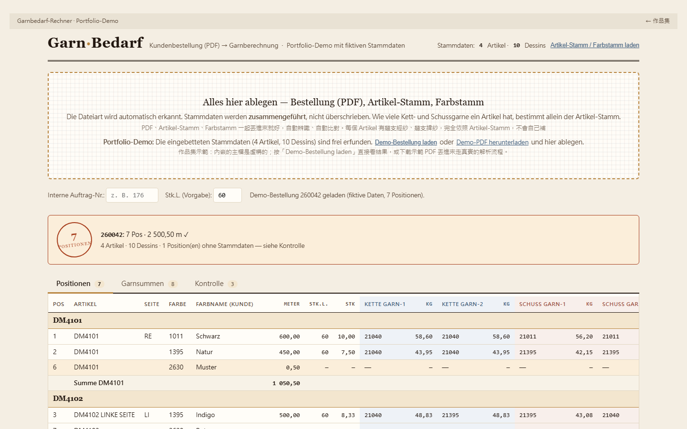

一份季節訂單幾十個位置，每個位置背後是兩到四支紗
客戶的訂購單是 PDF：每個位置寫品項、顏色（Dessin）、公尺數。備料人員要把每個位置換算成織造件數，再乘上該品項每件的經紗、緯紗克重，才知道每支紗要買多少公斤。品項的係數在一份 Excel 主檔，每個 Dessin 對應的紗號在另一份。原本是人工逐列查表、在 Excel 裡手算。
為一家奧地利紡織公司的生產備料做的單檔離線工具：把客戶的季節訂單 PDF 和兩份 Excel 主檔一起丟進去，自動辨識檔案種類、對上每個位置的品項與色號，算出件數與各支經紗、緯紗的公斤數，彙總成採購用的紗線清單並匯出四張工作表的 Excel。核心原則只有一條：紗的數量只聽品項主檔，缺的值絕不自己補。

客戶的訂購單是 PDF：每個位置寫品項、顏色（Dessin）、公尺數。備料人員要把每個位置換算成織造件數，再乘上該品項每件的經紗、緯紗克重，才知道每支紗要買多少公斤。品項的係數在一份 Excel 主檔，每個 Dessin 對應的紗號在另一份。原本是人工逐列查表、在 Excel 裡手算。
我不寫程式，但我知道備料人員手上有哪三個檔、每一步要查什麼、哪裡最常算錯。先把這些說清楚，再讓 AI 實作，用真實訂單一次次試，哪裡對不上就修。這個工具後來真的用在一季的備料上。
色號主檔常把第二支經紗的欄位填成和第一支一樣，如果據此生出一支紗，用量直接變兩倍；反過來，品項主檔有第二支緯紗的係數而色號主檔沒填，漏算就少買一半。所以工具的第一條原則是：有幾支紗由品項主檔的材料列決定，色號主檔只提供紗號，缺的值永遠不補。這句話寫在程式、頁尾、中文說明三個地方。
品項主檔有填克重的材料列（Kettmaterial A／B、Schussmat. H／J）才會產生一支紗；色號主檔的 B 或 J 空白時沿用 A 或 H 的紗號。如果色號主檔有 B 的紗號但品項主檔沒有 B 列，不算進去，但在 Kontrolle 列出來請人確認。
Dessin 號碼在不同品項可能對應不同的紗。找不到時工具會說「這個 Dessin 只有在某某品項有，不是這個品項，未採用」，把判斷留給人。
內嵌主檔會過期，所以每次丟新主檔都以檔案為準。但如果同一品項的係數和內嵌值不同，Kontrolle 第一列就寫「檔案說 X，之前是 Y，用檔案的值，請確認」。
備料人員最先要知道的是「這份能不能直接用」。印章顯示位置總數、每張訂單的合計公尺是否等於 PDF 上的 Gesamtmenge、有幾個位置缺主檔。任何一項不對，整個印章變紅；全對才綠。
兩個都是實際用的時候踩過的：訂單拖兩次數量變雙倍；客戶用極小公尺數的位置當樣品或佔位，不該進採購量。工具不替人決定，但一定要讓人看到。
pdf.js、SheetJS、ExcelJS 三個函式庫以 base64 內嵌，開頁時解碼執行，PDF 解析 worker 用 Blob URL；所以公司電腦不需要網路、不需要安裝。德式數字、Excel 浮點、含品項編號的工作表名等髒資料都有處理。自己寫的程式約 36 KB。
移除客戶與公司名稱；內嵌主檔換成 4 個虛構品項、10 個 Dessin，刻意涵蓋「有第二支經紗」「沒有第二支緯紗」「沒有 Stk.L.」「第二支紗號和第一支不同」等情況。加了「載入示範訂單」按鈕和一份可下載的虛構訂單 PDF（7 個位置，含左側標記、ACHTUNG 提示、一個故意找不到 Dessin 的位置、一個 0.5 公尺的佔位列），走真實的 PDF 解析路徑。
位置列格式、Artikel-Nr. 與 Farbe 的標籤是依一家客戶的訂購單寫的正則，換一家客戶就要改。主檔解析依賴 Excel 裡的標籤文字，標籤改了會讀不到。單人本機工具，沒有版本控管與歷史紀錄。原版曾用於一季的實際備料；作品集版本的所有數字都是虛構，不代表任何真實品項。